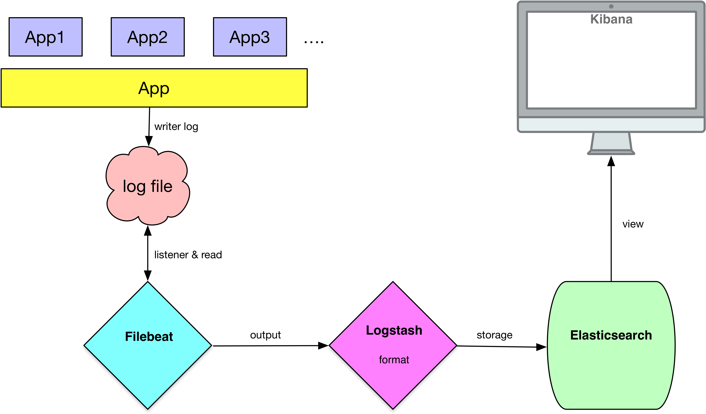

环境
os: mac pro
jdk: 1.8
filebeat: 6.5.4-darwin-x86_64
elasticsearch: 6.5.4
logstash: 6.5.4
kibana: 6.5.4-darwin-x86_64
具体安装过程不做介绍，不过在下载具体的版本时，一定要保证版本号一致，否则会出现兼容性问题。
filebeat、elk交互图
关于filebeat、elk的系统交互如下图所示:

filebeat配置
创建文件filebeat-trace.yml:
filebeat.inputs:
- type: log
paths:
- /logs/*/driver-trace.log
enabled: true
encoding: utf-8
document_type: driver_trace
close_renamed: true
close_removed: true
scan_frequency: 1s
max_bytes: 31457280
harvester_buffer_size: 409600
multiline:
pattern: '^(?:(?:25[0-5]|2[0-4][0-9]|[01]?[0-9][0-9]?)\.){3}(?:25[0-5]|2[0-4][0-9]|[01]?[0-9][0-9]?)'
negate: true
match: after
max_procs: 1
output.logstash:
hosts: ["localhost:5044"] # 配置实际环境的logstash地址
#loadbalance: true (在配置时因为加了这个配置项导致filebeat一直不能向logstash输送日志,坑啊！)
启动服务:
./filebeat -e -c filebeat-trace.yml
logstash配置
创建文件trace-pipeline.conf:
input {
beats {
port => '5044'
type => "driver_trace"
ssl => false
}
}
filter {
if [type] == "driver_trace" {
grok {
patterns_dir => ["/Users/lioswong/dev/software/elk/6.5.4/logstash-6.5.4/config/patterns"]
match => {"message" => ["%{IP:client}\|%{NUMBER:actionTime:int}\|%{NUMBER:traceType:int}\|%{IDSTR:driverNo}\|%{NUMBER:action:int}\|%{NUMBER:actionScene:int}\|%{NUMBER:actionResult:int}\|%{GREEDYDATA:traceExtend}\|%{GREEDYDATA:traceId}\|%{GREEDYDATA:params}\|%{GREEDYDATA:results}\|%{NUMBER:headNode:int}","%{IP:client}\|%{NUMBER:actionTime:int}\|%{NUMBER:traceType:int}\|%{IDSTR:driverNo}\|%{NUMBER:action:int}\|%{NUMBER:actionScene:int}\|%{NUMBER:actionResult:int}\|%{GREEDYDATA:traceExtend}\|%{IDSTR:bizLine}\|%{IDSTR:orderNo}\|%{IDSTR:orderType}\|%{NUMBER:orderLabel:int}\|%{GREEDYDATA:traceId}\|%{GREEDYDATA:params}\|%{GREEDYDATA:results}\|%{NUMBER:headNode:int}"]}
}
mutate {
remove_field => ["message"]
}
}
}
output {
if [type] == "driver_trace" {
elasticsearch {
hosts => ["localhost:9200"]
index => "driver_trace_%{+YYYY.MM.dd}"
manage_template => true
template_name => "driver_trace"
template_overwrite => true
document_type => "driver_trace"
template => "/Users/lioswong/dev/software/elk/6.5.4/logstash-6.5.4/config/templates/trace.json"
}
stdout {
codec => rubydebug
}
}
}
/Users/lioswong/dev/software/elk/6.5.4/logstash-6.5.4/config/templates/trace.json文件如下:
{
"template": "driver_trace_*",
"settings": {
"index.refresh_interval": "5s"
},
"mappings": {
"driver_trace": {
"properties": {
"client": {
"type": "keyword"
},
"actionTime": {
"type": "long"
},
"traceType": {
"type": "keyword"
},
"driverNo": {
"type": "keyword"
},
"action": {
"type": "keyword"
},
"actionScene": {
"type": "keyword"
},
"actionResult": {
"type": "keyword"
},
"traceExtend": {
"type": "text"
},
"bizLine": {
"type": "keyword"
},
"orderNo": {
"type": "keyword"
},
"orderType": {
"type": "keyword"
},
"traceId": {
"type": "keyword"
},
"orderLabel": {
"type": "keyword"
},
"params": {
"type": "text"
},
"results": {
"type": "text"
},
"headNode": {
"type":"keyword"
}
}
}
}
}
/Users/lioswong/dev/software/elk/6.5.4/logstash-6.5.4/config/patterns下的patterns文件内容:
IDSTR [a-zA-Z0-9._-]*
启动服务：
./logstash -f ../config/trace-pipeline.conf
elasticsearch配置
编辑elasticsearch.yml:
...
...
network.host: 127.0.0.1
#
# Set a custom port for HTTP:
#
http.port: 9200
...
...
启动服务:
./elasticsearch
配置kibana
编辑kibana.yml:
server.host: "localhost"
elasticsearch.url: "http://localhost:9200"
启动服务:ø
./kibana
至此服务搭建完毕.